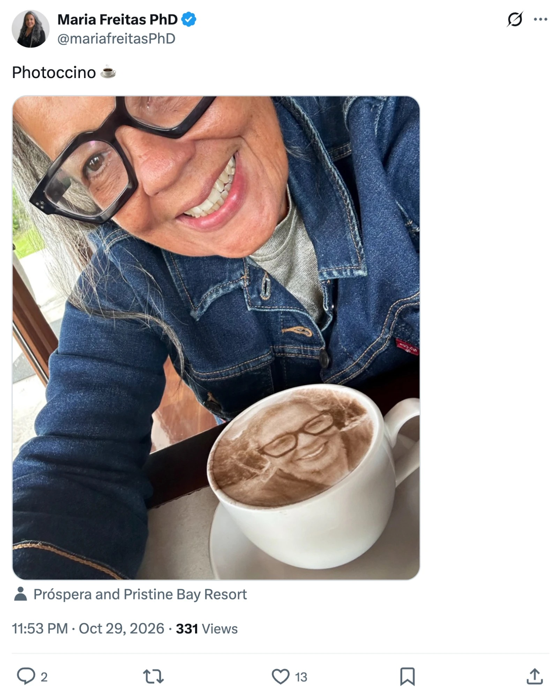

Word of the day 30 October 2026
noun coined elsewhere
pho·to·CCI·no
A cappuccino with a photo in the foam.

Photoccino ☕️
Etymologyphoto + -ccino, the tail of cappuccino. English has been using that tail as a suffix for decades: mochaccino, babyccino, frappuccino. Each one keeps the sound of the Italian and swaps out the front. Photo slots in cleanly because it already ends on an open -o, so the word needs no adjustment at the join.
NotePosted by Maria Freitas PhD on 29 October 2026, as one word and a coffee emoji, over a picture of the author beside a cup with the same smiling face printed in the foam. The post tagged Próspera and Pristine Bay Resort. No definition was given or needed: the word and the picture did it together. The drink already had a name. Selfieccino has been in use since at least 2017, when a London café began printing customers' faces onto their froth. But a selfieccino is limited to a selfie, while a photoccino takes any photo: your dog, your wedding, somebody else's face. It is the broader word, and arguably the one the machine always deserved. The string itself is older than the drink. Photoccino was a photo-software startup from Haifa, bought by Shutterfly in 2012, whose name had nothing to do with foam. It joined photo and cappuccino as a pun; this use makes it literal. So it is filed under old words, new senses, and the credit here is for the sense, not the spelling.
Where this string was already doing work before it was put to this use. The sense below is the coinage; the spelling is not.
The same string as a company name: software that ranked and organised photos. A pun on photo and cappuccino, with no foam involved.
Not this string, but the same drink, limited to selfies. Reported from the Tea Terrace in London, where a customer's picture is scanned and printed onto the froth.
Documented uses outside this project.
“Photoccino ☕️”, over a photo of the drink, tagged Próspera and Pristine Bay Resort.
Our own posts about this word. Not counted as sightings.
Official word of the day, 30 October 2026, in reply to Maria Freitas PhD.